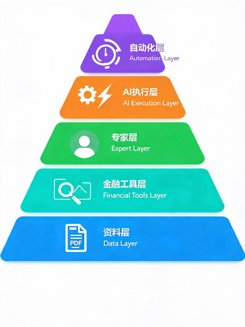
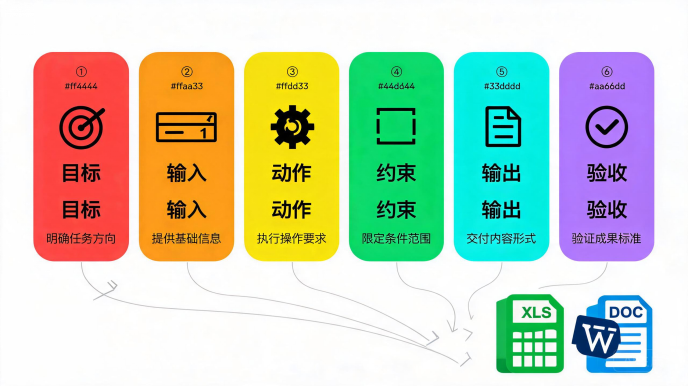
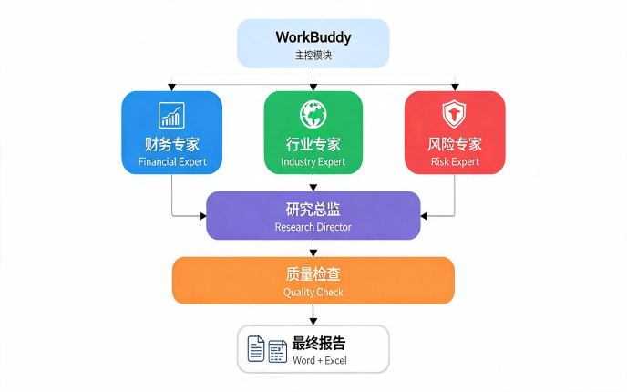
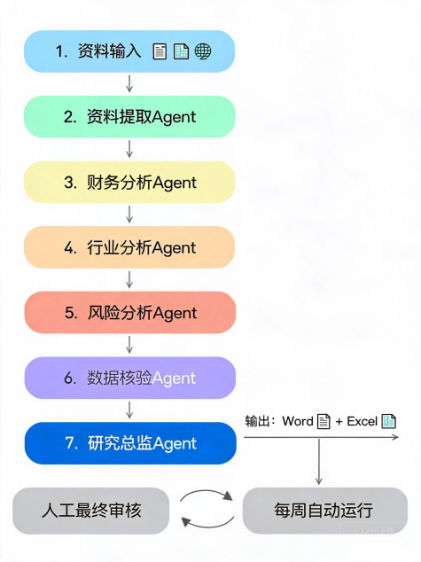
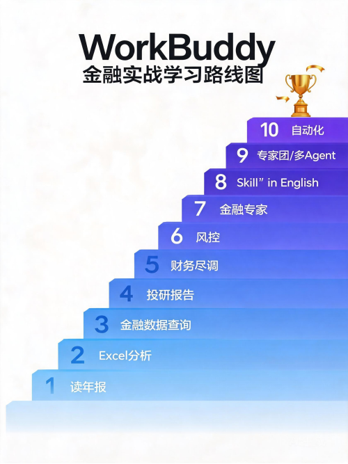

如果你还把WorkBuddy当成"又一个ChatGPT"，那你真的低估了它。
核心观点 |
WorkBuddy不是一个聊天机器人，而是一个能替你执行一整套金融工作的AI工作台。它的价值不在于"回答问题"，而在于"交付成果"——Excel、Word报告、数据分析，都是它的产出物。 |
这篇文章，我们按照"你坐到电脑前，具体点哪里、输入什么、最后拿到什么结果"的方式，带你从零到一跑通WorkBuddy金融全流程。
读完这一篇，你至少能完成：
• 用一份年报，让AI自动生成财务分析Excel
• 写出专业的金融Prompt，让AI输出可复核的结果
• 搭建属于你的"AI金融分析师团队"
• 把重复的金融工作变成自动化流水线
一、WorkBuddy金融到底是什么？
1.1 一句话说清本质
先给你建立一个最核心的认知：
ChatGPT/DeepSeek = 会回答问题的AI WorkBuddy = 会替你执行一整套工作的AI工作台WorkBuddy金融 = 用这套工作台处理金融资料、数据、研究和分析任务。 |
举个最直观的例子：
你手头有一份上市公司年报PDF、5份券商研报、一个Excel数据表。
▎ 传统方式是这样的：
打开PDF → 找数字 → 复制到Excel → 算公式 → 写Word报告 → 反复核对。
▎ WorkBuddy的方式是这样的：
把资料交给它 → 它读取 → 提取 → 计算 → 分析 → 生成Excel和Word报告。
💡 关键区别：普通AI给你"答案"，WorkBuddy给你"产物"。前者是一段文字，后者是可以直接用的文件。 |
1.2 它和ChatGPT、DeepSeek、Claude到底差在哪？
工具 | 最适合做什么 | 金融工作中的角色 |
ChatGPT | 思考、研究、写作 | 金融分析"大脑" |
DeepSeek | 低成本分析、推理、写作 | 性价比分析助手 |
Claude | 长文档、复杂推理、代码 | 财报/研报深度分析 |
Kimi | 长文档、中文资料 | 中文金融资料分析 |
WorkBuddy | 执行完整工作流程 | 金融工作执行平台 |
▎ 你问ChatGPT：
"帮我分析贵州茅台2025年年报。" |
它主要给你一段文字分析。
▎ 你问WorkBuddy：
"读取这个文件夹中的贵州茅台年报和3份券商研报，提取2023-2025年收入、净利润、毛利率、ROE，计算变化率，与券商预测进行对比，生成Excel和Word投资研究报告。" |
它的目标不是只回答你，而是：读取文件 → 分析 → 计算 → 制作Excel → 制作报告 → 交付文件。
⚠️ 记住：学WorkBuddy，学的不是"怎么提问"，而是"怎么设计一套工作流程让AI帮你执行"。 |
二、先记住这个"五层结构"，以后做金融任务就有框架了
不管遇到什么金融任务，都按这个五层结构去思考，就不会乱。

WorkBuddy金融五层结构图
第1层：资料层
所有分析的起点——年报、研报、Excel、PDF、网页。没有好的输入，就没有好的输出。
第2层：金融工具层
搜索、数据查询、文件解析、Excel处理。这些是AI的"手和眼睛"。
第3层：专家层
投研专家、财务分析专家、风控专家。把AI从"通用助手"变成"专业角色"。
第4层：AI执行层
提取 → 计算 → 对比 → 判断 → 写报告。这是AI真正干活的地方。
第5层：自动化层
每天/每周/每月自动执行。把一次性工作变成可持续的能力。
高手思维 |
真正的高手不会问"WorkBuddy有什么功能"，而是会问："这个金融任务应该由哪几个AI能力串起来？" |
三、第一次使用：从零跑通你的第一个金融任务
下面我们按Windows电脑来一步一步走。
3.1 下载安装：先把工具装起来
1 | 打开官方页面 在浏览器输入：workbuddy.press，这是WorkBuddy官方文档/产品入口。官方页面目前提供Windows、macOS下载和安装指南。 |
2 | 找到下载入口 进入网页后，找到"下载并安装"或"官方下载"，进入Windows下载页面。如果页面文字和我描述的稍有区别，以你当前页面显示为准。 |
3 | 下载并安装 点击Windows下载安装包。下载完成后双击安装。如果Windows弹出"是否允许此应用对你的设备进行更改？"，确认是官方来源后点击"是"。 | |
⚠️ 安全提醒：如果Windows提示"此应用已被阻止"，不要去下载所谓的"破解补丁"或"解除限制工具"。官方建议是由IT/系统管理员核验官方安装包和安全策略，不要绕过组策略。 | ||
3.2 第一次打开：先别急着做金融分析
这是很多新手最容易犯的错误——一上来就说："分析某公司未来股价。"
官方建议第一次任务应该满足：
• 输入明确，没有歧义
• 30分钟左右可以验收结果
• 结果可以打开检查、容易验证对错
• 即使出错也不会造成损失
💡 新手原则：第一个任务，选一个低风险的金融资料任务。先跑通流程，再挑战难度。 |
3.3 建立你的金融训练工作区
在开始之前，先建立一个规范的文件夹结构。这一步非常重要，很多人忽略了，结果后面一团乱。
在桌面或D盘新建一个文件夹，命名为：WorkBuddy金融训练
里面再建三个子文件夹：
• 01_原始年报 —— 存放原始资料，只读不动
• 02_分析结果 —— AI生成的中间产物
• 03_最终报告 —— 最终交付的文件
⚠️ 权限控制：金融资料尤其要控制权限。不要直接选Downloads文件夹，更不要把整个电脑给它。只给WorkBuddy它本次任务需要的那个文件夹。 |
四、第一个实操：让WorkBuddy读一份年报
我们开始吧。今天我建议使用贵州茅台年报作为练习材料——中文资料、上市公司、财务信息丰富、年报结构规范，非常适合第一次练习。
4.1 准备工作
先把一份上市公司年报PDF放进01_原始年报文件夹。
💡 资料来源：不要随便从搜索结果下载PDF。最好从公司官网、上交所、巨潮资讯等公开渠道获得正式年报。 |
4.2 创建第一个WorkBuddy任务
Step 1 | 点击"新建任务" 打开WorkBuddy，左侧找到"新建任务"按钮，点击。官方推荐的流程就是：新建任务 → 选择工作目录 → 选择模式 → 选择模型 → 输入任务 → 执行 → 查看产物。 |
Step 2 | 选择工作目录 选择你刚建的WorkBuddy金融训练文件夹。确认路径正确后允许访问。 |
Step 3 | 选择模式和模型 模式选择Craft（官方默认），模型先用默认模型。记住：先跑通，再优化成本。不同模型Credits消耗不同，第一次用默认模型建立实际消耗基准。 |
4.3 第一条金融Prompt怎么写？
不要只输入"分析这份年报"——这种提示词太差了。
直接复制下面这段，粘贴到输入框：
【第一条金融Prompt模板】 |
目标：请帮我完成一次上市公司年报基础财务分析。输入：仅使用当前工作区中的01_原始年报/贵州茅台2025年年度报告.pdf。第一阶段暂时不要修改原始PDF，也不要删除或覆盖任何文件。请按以下顺序执行：第1步：检查文件是否存在并可读取第2步：读取年报中与财务相关的章节第3步：提取核心财务数据（收入、成本、利润、现金流、资产等）第4步：计算同比变化第5步：数据质量检查第6步：初步分析重要约束：不预测股价、不给买卖建议、不编造数据、所有数字标明来源。输出：02_分析结果/财务核心指标.xlsx + 年报数据核验.md |
⚠️ 为什么要写这么长？：金融AI最大的风险不是"AI不会写"，而是"AI写得非常像真的，但是数字错了"。所以约束越明确，结果越可靠。 |
4.4 点击发送后，你该观察什么？
不要只盯着最终答案。WorkBuddy的重要价值之一就是执行过程。
你应该看到类似这样的流程：
正在分析任务 → 读取工作区 → 读取PDF → 分析年报 → 提取数据 → 计算 → 生成Excel → 生成Markdown
💡 权限确认：如果它要求"是否允许读取文件"，你要检查路径。确认确实是WorkBuddy金融训练文件夹里的文件，然后允许。官方特别提醒：第一次执行任务时应该逐项确认权限。 |
五、结果出来了，怎么检查？怎么修正？
5.1 最终会得到什么？
理想情况下，你会在02_分析结果文件夹里看到：
• 财务核心指标.xlsx
• 年报数据核验.md
5.2 第一次人工检查：重点看什么？
现在不要相信AI。你需要拿Excel和原始年报PDF进行对照。
▎ 检查①：数字对不对
比如"2025年营业收入"，回到PDF搜索"营业收入"，找到原始数字，对比Excel。
▎ 检查②：单位对不对
重点看是元、万元、百万元还是亿元。这是金融分析最容易出现的大坑。
▎ 检查③：同比对不对
抽查2-3个同比计算。比如2024年100亿、2025年120亿，同比应该是20%。
5.3 发现错误怎么办？千万不要重来
⚠️ 非常重要：发现错误后，不要重新创建一个任务。指出差异让它局部修正，比重新描述整个任务更省Credits，也更容易收敛。 |
比如你发现2025年经营现金流的数字不对，可以这样说：
【错误修正Prompt模板】 |
我发现一个数据错误，需要你局部修正，不要重新执行整个任务。错误位置：02_分析结果/财务核心指标.xlsx — 2025年经营活动产生的现金流量净额请重新回到01_原始年报/贵州茅台2025年年度报告.pdf，重新确认这个数字。请检查：原始数字、单位、报告期、正负号、Excel中的数字，如果涉及同比请重新计算。只修改确认错误的部分，不要修改其他已经核验正确的数据。修改完成后告诉我：原值是什么、正确值是什么、错误原因是什么、同比是否需要重新计算。 |
六、WorkBuddy金融最值得学的7个核心能力
如果你不想学一大堆功能，我建议按这个优先级来：
排名 | 能力 | 为什么重要 |
第1名 | 文件分析 | PDF、Excel、Word分析——金融工作最基础的生产力 |
第2名 | 金融数据查询 | 股票、基金、宏观数据等，直接获取结构化数据 |
第3名 | 专家 | 把普通AI变成财务分析师/投研分析师/风控人员的工作视角 |
第4名 | Excel处理 | 真正金融工作大量时间都在Excel里：清洗、计算、对账、分析、图表 |
第5名 | 多Agent/专家团 | 财务+行业+风险+数据+汇总，多人协作比一个AI更可靠 |
第6名 | Skill | 把重复工作变成标准化能力，不用每次重写Prompt |
第7名 | 自动化 | 每周自动生成报告，从"人干活"变成"系统干活" |
左侧找到"专家"，点击进入。搜索框输入关键词：
• 金融
• 财务
• 投资研究 / 投研
• 风控
💡 找不到也没关系：官方明确说明：专家适合重复出现、评价标准明确的专业任务；一次性任务直接写Prompt反而更省事。第一次学习，我甚至更建议你：先不用专家 → 学会Prompt → 再学专家。 |
6.2 金融数据查询：真正的效率倍增器
你可以尝试这样的查询：
【金融数据查询Prompt】 |
请查询贵州茅台最近一期可获得的公开财务数据。要求：1. 营业收入2. 归母净利润3. 净利润同比4. 毛利率5. ROE 6. 经营现金流7. 市盈率（如果数据源支持）8. 数据对应的报告期9. 数据来源10. 数据发布日期不要把不同报告期的数据混在一起。如果某项数据无法确认，请写"无法确认"，不要猜测。最后用表格输出。 |
6.3 Excel分析：金融人最该掌握的杀器
把股票数据Excel放进工作区，然后输入：
【Excel金融分析Prompt】 |
请分析当前工作区中的股票数据Excel。第一步：检查工作簿结构（几个Sheet、哪些字段、时间范围、空值、重复数据、异常值）第二步：计算日收益率、累计收益率、最大回撤、平均成交量、波动率第三步：找出涨幅最大和跌幅最大的5个交易日、成交量异常的日期第四步：制作收益率表、最大回撤表、异常交易日表、收益率折线图、成交量变化图第五步：生成一份分析报告注意：只分析提供的数据、不要预测未来价格、不要给出买卖建议、所有计算必须能够追溯到原始数据。 |
七、高手都在用的"六段式"金融Prompt模板
以后你做金融任务，不要每次重新想Prompt。固定用这个六段式结构，效果稳定得多。

六段式金融Prompt模板
① 目标：我要完成什么
一句话说清楚任务目的。比如"判断公司盈利质量"、"建立投研数据底稿"。
② 输入：用什么资料
明确列出所有输入资料。比如"2024、2025年年报"、"3份券商研报"。
③ 动作：具体做什么
分步骤列出要执行的操作。比如"提取收入、利润、现金流并计算同比"。
④ 约束：不能做什么
明确边界。比如"只能使用年报数据"、"不预测股价"、"不给出买卖建议"。
⑤ 输出：交付什么文件
明确产出物格式和位置。比如"Excel + Word"、"保存到03_最终报告文件夹"。
⑥ 验收：怎么算合格
给出验收标准。比如"所有数字必须能够追溯到原始资料"。
【完整六段式Prompt模板】 |
【任务目标】我要完成：______【输入资料】请仅使用：______【需要完成的工作】1. ______ 2. ______ 3. ______【分析方法】请按照以下逻辑分析：______【数据要求】所有数字必须：标明报告期、标明单位、尽可能标明来源、无法确认时不得猜测【金融风险控制】请严格区分：已披露事实、基于数据的分析、外部预测、AI推测。不要把预测写成事实。【输出】请生成：1. Excel数据表 2. 分析报告 3. 来源清单【验收标准】最终结果必须满足：所有核心数字能够追溯、报告期没有混淆、单位没有混淆、不编造数据、不确定信息明确标记、结论能够回到数据和资料 |
这个模板比一句"帮我看看这家公司怎么样"强100倍。
八、完整实战：做一份上市公司投研简报
下面进入真正的金融案例。假设你准备研究一家上市公司，想在30-60分钟内得到一份初步研究报告。
8.1 第1步：建立项目目录
建立这样的文件夹结构：
• 上市公司投研项目
• ├── 01_年报
• ├── 02_研报
• ├── 03_数据
• ├── 04_分析
• └── 05_最终报告
8.2 第2步：放入资料
⚠️ 资料安全：第一次最好用公开资料和脱敏资料。不要一开始就把客户身份证、银行账户、内部交易数据、未公开并购资料丢进去。先脱敏 → 小样本测试 → 正式使用。 |
8.3 第3步：第一轮——资料整理
不要直接叫它写报告。第一轮只做资料整理。
【第一轮：资料整理Prompt】 |
请处理当前工作区中的上市公司研究资料。目标：建立一个可复核的投研数据底稿。资料包括：2024年年报、2025年年报、3份公开券商研报。请完成：一、年报数据提取：提取2024、2025年收入、成本、利润、现金流、资产、ROE、毛利率、净利率等核心指标二、计算同比变化三、研报观点整理：分别提取每份研报的核心观点、盈利预测、增长逻辑、风险因素、目标价格四、冲突检查：找出不同资料之间存在的数据冲突五、来源标注：每个关键数字标明来自哪份文件不要进行投资建议。不要预测不存在的数据。输出：Excel格式的《投研数据底稿.xlsx》。 |
8.4 第4步：检查Excel
打开投研数据底稿.xlsx，重点检查三个东西：
▎ ① 单位
万元、亿元、百万——不要搞错。
▎ ② 报告期
2024年度、2025年度、2026Q1——不能混。
▎ ③ 同比
抽查几个，确保计算正确。
8.5 第5步：第二轮——经营分析
数据确认之后，再让AI做分析。
【第二轮：经营分析Prompt】 |
基于刚刚生成并核验过的《投研数据底稿.xlsx》，继续进行经营质量分析。请从以下五个方面分析：1. 收入增长：判断增长来自销量、价格、产品结构、新业务还是其他因素2. 盈利能力：分析毛利率、净利率、ROE、净利润增速，判断在改善还是恶化3. 现金流质量：比较净利润和经营现金流，判断是否匹配4. 资产负债表：重点识别应收账款、存货、商誉、有息负债、资产负债率异常5. 风险：从公司披露和研报中整理风险最终输出：经营表现、盈利质量、现金流质量、资产负债表风险、市场一致预期、主要风险、需要进一步验证的问题。所有判断必须尽可能引用输入资料。 |
8.6 第6步：生成最终投研报告
这时再生成最终报告。输入：
【第三轮：生成报告Prompt】 |
请基于已经完成的投研数据底稿和分析结果，生成一份《上市公司初步投研报告》。报告结构：一、公司概况二、核心财务数据（表格展示）三、经营趋势四、盈利质量五、现金流质量六、资产负债表七、行业与竞争格局八、市场一致预期九、主要投资逻辑（用支持因素表达，不直接给买卖建议）十、主要风险十一、数据冲突与待验证问题十二、结论要求：明确区分事实/分析/预测、关键数字标明来源、不确定内容标注"不确定"、不编造数据、不做确定性判断、不直接替用户做投资决策。输出：《上市公司初步投研报告.docx》 + 《数据来源清单.xlsx》 |
九、进阶玩法：把它升级成"AI金融分析师团队"
这是你下一阶段真正值得玩的东西。不要只有一个AI。设计一个团队。

AI金融分析师团队多Agent协作架构
9.1 团队怎么分工？
角色 | 负责什么 | 关注点 |
财务分析师Agent | 三张表、利润、现金流、ROE | 数字准确性、同比变化、盈利能力 |
行业分析师Agent | 市场规模、竞争格局、行业趋势 | 增长逻辑、竞争优势、行业地位 |
风险分析师Agent | 政策、经营、财务、竞争风险 | 风险识别、风险等级、预警信号 |
研究总监Agent | 汇总前三个专家的观点 | 逻辑一致性、结论可靠性、报告结构 |
审稿人Agent | 检查数字、来源、逻辑 | 错误排查、事实核验、质量把关 |
💡 为什么要分工？：一个AI什么都做，容易出错。分工会让每个Agent只专注自己的领域，结果更专业、更可靠。这和真实的投研团队运作是一个道理。 |
9.2 再进一步：自动化金融研究流水线
最终可以做到这样的流水线：

自动化金融研究流水线
然后设置每周自动运行。
终极形态 |
这就是WorkBuddy从"AI聊天工具"升级为"金融工作系统"的过程——从人问一句AI答一句，变成一套自动运转的研究流水线。 |
十、金融场景最常见的10个错误，千万别踩
错误 | 正确做法 |
1. 只说"分析这家公司" | 用六段式：目标+输入+动作+约束+输出+验收 |
2. 让AI自己猜数据 | 找不到就写"资料未找到"，禁止补全 |
3. 把所有资料一次性扔进去 | 分阶段处理：先提取 → 再核对 → 再分析 |
4. 第一次就要投资建议 | 先事实 → 再分析 → 再风险 → 最后由人判断 |
5. 不看数据日期 | 2024年报、2025年报、2026Q1必须分开，不能混 |
6. 不看单位 | 万元、亿元、百万——金融分析里单位错误非常危险 |
7. 把券商预测当事实 | 必须明确区分"公司披露"和"券商预测" |
8. 把AI推测当事实 | Prompt里明确要求：事实、分析、推测必须分开 |
9. 直接用真实敏感数据 | 先脱敏 → 小样本测试 → 正式使用 |
10. 看到错误直接重新跑 | 指出错误位置，让AI局部修正，省Credits也更精准 |
十一、学习路线：按这个顺序学，少走弯路
我给你设计了一条WorkBuddy金融实战学习路线，从入门到精通，共10课。

WorkBuddy金融实战学习路线图
课程 | 内容 | 目标 |
第1课 | 读一份年报 | PDF → 财务数据表 |
第2课 | 分析一个Excel | Excel → 指标 → 图表 → 报告 |
第3课 | 金融数据查询 | 股票/基金/宏观数据 → 结构化表格 |
第4课 | 投研报告 | 年报 + 研报 → 投研简报 |
第5课 | 财务尽调 | 多份企业资料 → 尽调清单 → 风险报告 |
第6课 | 风控 | 数据 → 风险指标 → 异常 → 风险报告 |
第7课 | 金融专家 | 把固定方法沉淀成专家 |
第8课 | Skill | 把重复金融任务变成"一键执行" |
第9课 | 专家团/多Agent | 财务 + 行业 + 风险 + 审核 |
第10课 | 自动化 | 每周自动生成金融研究报告 |
十二、关于Credits：怎么算？怎么省？
12.1 到底要花多少钱？
这里我特别提醒你：不要相信网上随便一个教程说"这个任务一定花X元"。
WorkBuddy的Credits会受到很多因素影响：
• 选择的模型（不同模型价格不同）
• 任务复杂程度
• 上下文长度
• 文件数量和大小
• 工具调用次数
• 是否使用Skill
• 自动化执行次数
怎么测真实成本？ |
进入WorkBuddy的模型/Credits/用量页面，执行任务前记录一下Credits余额，任务完成后再看一次，两者相减就是本次任务的真实消耗。这样你得到的是你自己账号的真实成本，而不是网上别人说的数字。 |
12.2 怎么省Credits？
▎ 错误方式：
"读取10份年报+20份研报，然后分析行业、公司、估值、风险、竞争格局，最后给我一个投资建议。" |
这很容易变成一个巨型任务，又贵又容易出错。
▎ 正确方式：拆成小任务
任务1：资料提取 → 任务2：数据核对 → 任务3：财务分析 → 任务4：行业分析 → 任务5：风险分析 → 任务6：最终报告
💡 官方建议：官方故障排查文档也建议：把大任务拆成文件盘点、规则确认、生成、验收等阶段。这样不仅省Credits，还更容易控制质量。 |
最后：你的定位，决定了它的价值
如果你只是把WorkBuddy当成"另一个ChatGPT"——你会觉得它没什么特别。
但如果你把它理解成：
一个能够读取我的金融资料、调用金融工具、操作Excel、生成文件，并且可以把整个金融工作流程自动跑起来的AI工作台。 |
价值就完全不同了。
尤其是金融工作中真正耗时间的，从来不是"写一句分析"，而是：
资料搜集 → 文件阅读 → 数据提取 → 数据清洗 → 计算 → 对比 → 风险检查 → 报告 → Excel → Word → 复核。
核心结论 |
WorkBuddy恰好是在解决这一整条链。它不是来替代金融人的，而是来帮金融人把重复的、机械的、耗时间的工作自动化，让你把时间花在真正需要判断和决策的地方。 |
现在，打开你的电脑，从第一课开始——读一份年报。
跑通第一个任务，比读10篇教程都有用。
—— 明天见 ——
如果觉得有用，欢迎分享给身边做金融的朋友